Cet outil de visualisation a été développé par les Directions Régionales Normandie, Ile-de-France et Bretagne de l’Office Français de la Biodiversité (OFB) dans le cadre de la démarche des productions régionales reproductibles. Il repose sur les données issues de la base ASPE (Application de Saisie Piscicole et Environnementale), décrite par Irz et al. (2022), qui est l’outil de bancarisation des résultats des pêches à l’électricité dans les cours d’eau français.
Ce projet consiste à proposer un service simple à prendre en main et orienté vers une visualisation graphique et interactive répondant avant tout aux besoins des utilisateurs dans les services territoriaux de l’OFB.
Le tableau de bord permet d’afficher, pour chaque site :
· La composition du peuplement de poissons
· L’évolution des effectifs
· L’état écologique mesuré à travers l’Indice Poisson Rivière (IPR ; Oberdorff et al. 2002, Belliard & Roset 2006)
Ces résultats sont visualisables à différentes échelles spatiales et temporelles. La distribution spatio-temporelle par espèce est également disponible.
Le tableau de bord restitue également quelques informations complémentaires sur la sélection effectuée.
Les données brutes sont téléchargées depuis l’API « Poisson » de la plateforme Hub’eau.
Un export de l’ensemble des
données a été réalisé en date du 31/03/2026 puis une mise à jour hebdomadaire
est réalisée en récupérant les opérations créées ou modifiées depuis la date du
dernier export.
Une opération de pêche est retenue uniquement si elle satisfait aux conditions suivantes :
- La station possède un code Sandre (https://sandre.eaufrance.fr/)
- Le niveau de qualification des données des opérations est « Correcte »
- Le protocole mis en œuvre est un échantillonnage multi-spécifique (pêche complète ; pêche par ambiance ; pêche partielle par points ; pêche partielle sur berge) et non un protocole « espèce » (comme l’indice d’abondance anguille)
- La station est localisée en France métropolitaine et en Corse (Corse exclue uniquement pour visualiser l’IPR qui n’y est pas applicable).
L’application est développée en langage R (Ihaka & Gentleman 1996) et repose en particulier sur les packages shiny (Chang et al. 2026) et golem (Fay et al. 2026).
Le code permettant de charger et de
prétraiter les données, ainsi que celui de l’application elle-même, est
disponible sous la forme de deux packages AspeDashboardData et AspeDashboard, tous deux
disponibles sur GitHub.
L’application est gracieusement hébergée par le CGDD/SDES du ministère en charge de l’environnement.
L’ouverture de l’application s’effectue directement depuis l’onglet « Synthèse des opérations » composé de la façon suivante :
- A gauche, le panneau de sélection pour filtrer les données à afficher
- Au centre, l’affichage cartographique interactif
- A droite, des informations complémentaires qui s’actualisent en fonction de la sélection
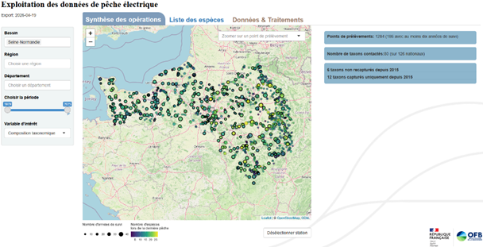
Au survol d’un point de prélèvement des informations sont accessibles via une infobulle avec notamment le nom et le code Sandre de la station à laquelle ce point est rattaché ainsi que le nombre d’années de suivi.
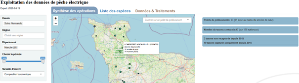
L’affichage est par défaut au niveau national (France métropolitaine), pour l’ensemble de la période et sur la composition taxonomique.
Le panneau de sélection permet de choisir une zone géographique (bassin, région, département avec sélection unique ou multiple), de restreindre la fenêtre temporelle de visualisation et de sélectionner la variable d’intérêt à afficher.
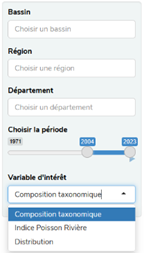
Le sélecteur « Variables d’intérêt » permet de choisir parmi trois types d’informations à afficher : composition taxonomique, indice poisson rivière (IPR), distribution d’espèce.
La sélection d’un point de prélèvement peut se faire directement par clic sur la carte en zoomant sur le fond affiché ou à partir du sélecteur situé en haut à droite de la carte (« Zoomer sur un point de prélèvement »).
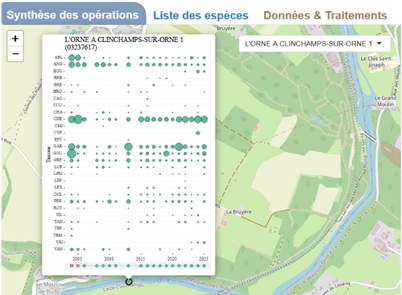
En plus des données restituées directement sur la carte en fonction de la sélection faite, il est possible d’obtenir des informations plus détaillées selon la variable d’intérêt après sélection d’un point de prélèvement (affichage sur le panneau de droite).
La sélection d’un point de prélèvement est conservée si on modifie la variable d’intérêt sélectionnée, et l’affichage est alors actualisé en conséquence.
La couleur du point affiché correspond à la richesse locale (nombre d’espèces) lors de la dernière pêche. Son diamètre indique le nombre d’années de la chronique.
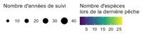
En cliquant sur le point de prélèvement, on affiche la chronique interannuelle des captures par taxon triés dans l’ordre alphabétique de leur code 3 lettres (cercles de taille proportionnelle aux effectifs). Au survol de chaque cercle, on accède aux effectifs capturés pour chaque taxon ainsi que, sur la barre inférieure, au protocole mis en œuvre. Le graphique est exportable au format png.
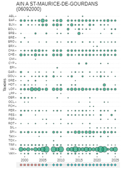
Sur le volet de droite de l’écran s’affichent quelques chiffres clés qui s’actualisent en fonction de la sélection spatio-temporelle.
La couleur de chaque point indique la classe de qualité d’après l’IPR, évaluée lors de la dernière opération de pêche de chacun des points.
Si aucun point de prélèvement n’est sélectionné, quelques chiffres clés et des graphiques sur l’évolution temporelle des classes de qualité de l’IPR sont représentés.
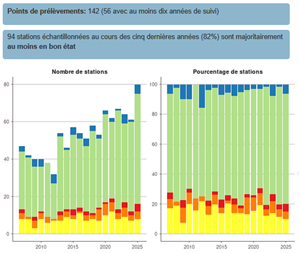
En cliquant sur un point de prélèvement, on affiche la chronique interannuelle des valeurs de l’IPR. Les valeurs précises de l’indice s’affichent au survol. Le graphique est exportable au format png.
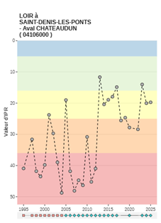 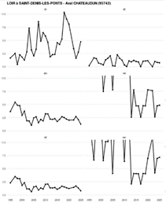
Sur le volet de droite de l’écran s’affiche l’évolution interannuelle des métriques de l’IPR (cf. Belliard & Roset 2006 pour leur interprétation).
A la sélection de cette variable il s’agit de sélectionner une espèce pour que la carte affiche les points de prélèvements où l’espèce a été capturée sur la période considérée.
Il est possible de faire varier la période ou l’année affichée afin de visualiser l’expansion ou la régression de l’aire de répartition de l’espèce. Pour visualiser de manière dynamique l’évolution temporelle de la distribution des captures, il convient de sélectionner un pas de temps et de lancer l’animation via un clic sur le triangle bleu.
Par défaut, l’affichage sur la partie droite de l’écran synthétise les informations sur la zone sélectionnée. En cliquant sur un point de prélèvement, les informations d’absence et de présence avec les valeurs de densité associée sur le point sélectionné s’affichent en complément sur le graphique du bas.
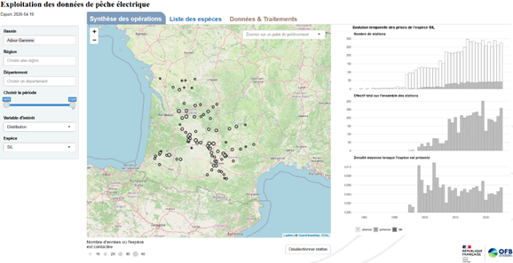
Ce tableau de bord utilise les données issues de la base ASPE dans son état actuel de validation. Compte tenu du délai de rafraichissement de l’API poisson Hub’eau, le tableau de bord n’intègre pas forcément les dernières corrections faites en base. Certaines données sont néanmoins filtrées selon les critères décrits dans Traitements. Aucune modification selon l’évolution du référentiel taxonomique n’est effectuée (cf. Taxonomie).
Ces inventaires sont obtenus avec une méthode de pêche à l’électricité et selon des protocoles adaptés au suivi des peuplements de poissons dans le cadre de l’évaluation de l’état écologique des eaux de surface continentales. Il convient de tenir compte de ce contexte lors de l’interprétation des résultats. Par exemple, il est communément admis que la pêche à l’électricité est sélective selon les taxons et les classes de taille concernés et que l’efficacité de capture peut être affectée par les conditions et le type de milieu en particulier dans les grands cours d’eau. Ainsi l’absence d’une espèce dans les captures ne permet pas nécessairement de conclure à son absence du secteur considéré.
Les résultats d’IPR (Indice Poissons Rivière) issus de la base ASPE ont tous été calculés à partir du SEEE.
Néanmoins le tableau de bord reste un outil de travail donc seules les données diffusées par le portail Naïades et les résultats affichés dans les états de lieux des bassins et les rapportages font foi pour l’évaluation de l’état écologique des masses d’eau.
La correspondance entre les codes espèces et leurs noms est donnée dans l’onglet « Liste des espèces ».
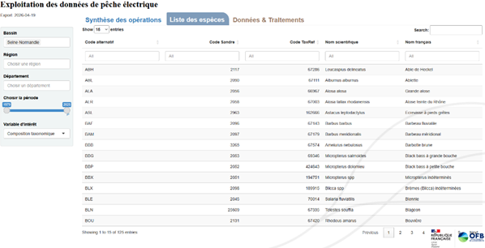
Depuis les années 2000 et l’avènement des méthodes moléculaires, la connaissance taxonomique sur les poissons d’eau douce a conduit à subdiviser certains groupes (Denys et al. 2024) : Goujons (Gobio spp.), Vandoises (Leuciscus spp.), Chevesnes (Squalius spp.), Brochets (Esox spp.), Ombres (Thymallus spp.), Epinochettes (Pungitius spp.), Vairons (Phoxinus spp.), Loches franches (Barbatula spp.), Chabots (Cottus spp.).
Le tableau de bord affiche les données telles qu’elles ont été saisies selon le référentiel taxonomique en vigueur à un instant t, sans les modifier pour les mettre en conformité avec ces connaissances nouvelles.
Belliard J, Roset N. 2006.
Indice Poisson Rivière (IPR) - Notice de présentation et d’utilisation. Conseil
Supérieur de la Pêche. https://www.documentation.eauetbiodiversite.fr/fr/notice/file/29785
Chang W, Cheng J, Allaire JJ,
Sievert C, Schloerke B, Aden-Buie
G, Xie Y, Allen J, McPherson J, Dipert
A, Borges B. 2026. shiny: Web application framework for R.
Denys GPJ, Pividori
R, Poulet N, Rech G, Vignes
R, Busson F. 2024. Guide de
détermination des “ néotaxons ” de poissons d’eau
douce de France hexagonale. PatriNat
(OFB-MNHN-CNRS-IRD).
Fay C, Guyader
V, Girard C. 2026. golem: A framework for robust Shiny applications.
Ihaka R, Gentleman R. 1996. R:
A language for data analysis and graphics. Journal of Computational and Graphical Statistics 5: 299–314.
Irz P, Vigneron T,
Poulet N, Cosson E, Point T, Baglinière E, Porcher
J-P. 2022. A long-term monitoring database on fish and crayfish species in French
rivers. Knowl Manag Aquat
Ecosyst 423: 25.
Oberdorff T, Pont D, Hugueny B, Porcher J-P. 2002.
Development and validation of a fish-based index for the assessment of ‘river
health’ in France. Freshw Biol 47: 1720–1734.